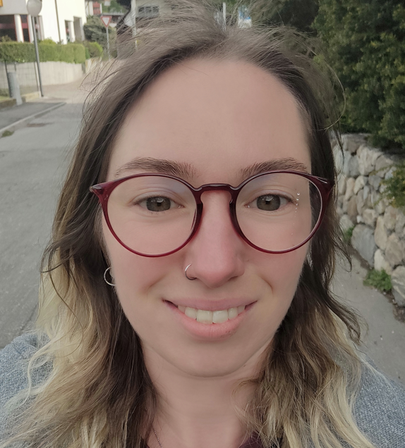

Sabine Wieser

Summary
Before i started with Web Development, I worked as Social Worker in a retirement home and as Personal Assistent for people with special needs
Education
- 2012: Matura - "Pädagogisches Gymnasium, Meran, Italy"
- 2013: Pflegehelferin - Bozen, Italy
- 2017: Diplom Sozialbetreuerin - Meran, Italy
Work Experience
- Social Worker - retirement home "Annenbergheim", Latsch, Italy
August 2017 - March 2021
- Care (basic care, prophylactic measures, household support, medication administration, etc.)"
- Counseling seniors and their families on the care cycle within the senior care home.
- Planning short-term care and admission to the care home.
- Personal Assistence - Persönliche Assistenz GmbH "PAV", Vienna, Austria
November 2021 - October 2022
- Household, personal hygiene and health maintenance
- Communication and leisure companionship
- Basic needs in mobility matters
- Empowering independent living
- Personal Assistence - Private D.B., Vienna, Austria
June 2022 - now
- Household, personal hygiene
- Communication
- Basic needs in mobility matters
- Empowering independent living
Skills
- Microsoft Office: ☆ ☆ ☆ ☆ ☆
- Organization skills: ☆ ☆ ☆ ☆ ☆
- Communication skills: ☆ ☆ ☆ ☆ ☆
- Problem-solving: ☆ ☆ ☆ ☆
- Language skills:
- German: ☆ ☆ ☆ ☆ ☆
- Italian: ☆ ☆ ☆ ☆
- English: ☆ ☆
- Driving license: B
More Information
Awards and Certifications
- Diplom as Social Worker for elderly, disabled and mentally ill individuals (Diplom-SozialbetreuerIn/PflegehelferIn mit Zusatzausbildung in
Gesundheitversorgung)
- Certification as Care Assistent (PflegehelferIn)
- Matura
- Project "Zeit Schenken"
Other
© 2024 Sabine Wieser. All rights reserved.